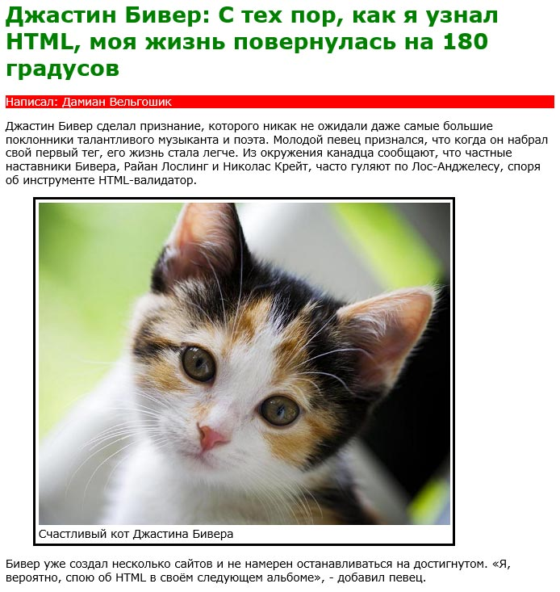
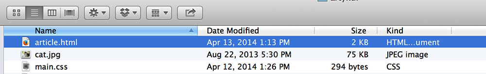
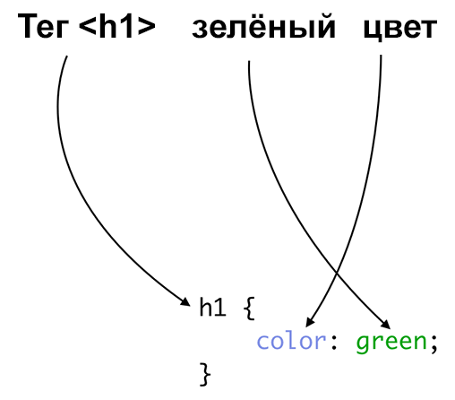
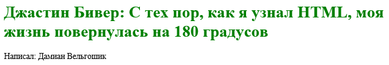
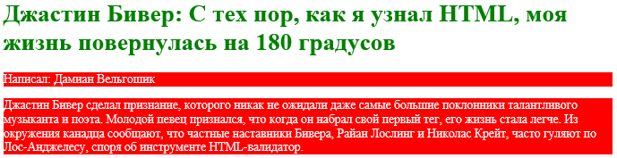
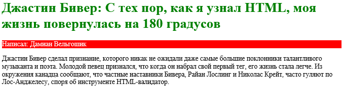
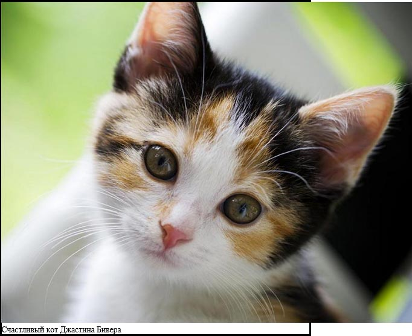
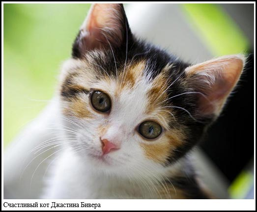

Визуальный сайт в CSS3
Вы, возможно, уже заметили, что за исключением наших изображений сайт выглядит не очень интересно. Чёрный текст на белом фоне не очень приветлив к нашим посетителям. Давайте поработаем над внешним видом нашего сайта с помощью CSS (Cascading Style Sheets, каскадные таблицы стилей). Используя этот язык мы можем манипулировать такими признаками сайта как цвет, размер шрифта и многими другими качествами. Существует огромный список возможностей доступных с помощью CSS.
В предыдущих разделах мы использовали HTML для описания содержимого сайта и делили его на фрагменты в соответствии с их важностью. CSS будет отвечать за внешний вид наших сайтов. Код CSS может быть помещён в отдельный файл с расширением .css и вставлен с помощью специального тега. Вы также можете поместить его непосредственно в HTML-документ.
Представьте себе на мгновение на абстрактном примере, что мы хотим построить дом с кодом CSS, где выбираем такие элементы, как окна, двери, крыша, стены, желоба и т. д. Мы хотели бы купить окна конкретных размеров и краски для каждой необходимой детали. Если мы построили этот дом на CSS, то один из многих вариантов решения этой задачи может выглядеть так.
крыша {
background-color: green;
}
двери {
background-color: yellow;
width: 100px;
height: 300px;
}
окна {
border: 5px solid brown;
width: 150px;
}Проанализируем блок «крыша» этого кода сверху вниз (заметьте, что чтение сверху вниз — это правило при чтении любого типа кода, а не только HTML и CSS).
крыша {
background-color: green;
}Если перевести указанный выше код на простой язык, то мы выбрали элемент с именем «крыша» и установили зелёный цвет фона.
окна {
border: 5px solid brown;
width: 150px;
}Код выше говорит «для всех окон установить следующее: рамка (border) толщиной 5 пикселей (5px), отмеченная непрерывной линией (solid), коричневая (brown) Кроме того, само окно должно иметь ширину (width) 150 пикселей (150px)».
Вы, возможно, заметили повторяющийся характер кода. В первой строке мы пишем имя элемента (называется «селектор»), затем определяем вид этого элемента между фигурных скобок.
Шаблон имеет базовую структуру, показанную ниже.
Селектор {
имя_свойства: значение_свойства;
}Такой тип конструкции является типичным правилом CSS. Правило состоит из селектора (всё что идёт до открывающей фигурной скобки), далее следует список свойств, которые вы пишете в скобках.
Есть разные пути для точного указания, что мы хотим спроектировать. Скажем, мы только хотим определить дизайн для окон на первом этаже. Что тогда? Мы могли бы написать нечто подобное.
первый этаж окно {
border: 5px solid brown;
width: 150px;
}Результатом является только то, что селектор изменился. Вместо «окна {» мы написали «первый этаж окно {».
Этот код читается слева направо так: «найти первый этаж, затем найти на нём окно и установить следующие значения». Если мы поместим в «первый этаж окно» такой подселектор:
соседняя стена окна {Тогда мы говорим браузеру: «найти окно на первом этаже, окна рядом с ним и заполнить их следующими значениями» и т. д. Если вы помните про уже упомянутую аналогию в которой мы говорили о вложенных тегах как о детях и родителях, то это та же самая идея — элементы, вложенные в другие элементы.
К сожалению, браузер не может построить дом, но наш пример говорит нам как работает CSS. Эта аналогия полезна, потому что при вёрстке мы не всегда в состоянии увидеть изменения. Но мы можем думать об абзацах (<p>) как об окнах, дверях как о заголовках (<h1>) и т. д.
Это будет выглядеть так.
p {
}
h1 {
}Давайте применим то, что мы узнали в этой аналогии к нашему примеру и используем подобные идеи, чтобы добавить немного цвета и жизнь в статью о Джастине Бивере.
Напомним, что наш код выглядит так.
<!DOCTYPE html>
<html lang="ru">
<head>
<meta charset="utf-8">
<title>Джастин Бивер увлечён HTML</title>
</head>
<body>
<article>
<header>
<h1>Джастин Бивер: С тех пор, как я узнал HTML, моя жизнь повернулась на 180 градусов</h1>
<p>Написал: Дамиан Вельгошик</p>
</header>
<p>Джастин Бивер сделал признание, которого никак не ожидали даже самые
большие поклонники талантливого музыканта и поэта. Молодой певец признался,
что когда он набрал свой первый тег, его жизнь стала легче. Из окружения
канадца сообщают, что частные наставники Бивера, Райан Лослинг и
Николас Крейт, часто гуляют по Лос-Анджелесу, споря об инструменте
HTML-валидатор.</p>
<figure>
<img src="cat.jpg" alt="Кот Джастина Бивера доволен">
<figcaption>Счастливый кот Джастина Бивера</figcaption>
</figure>
<p>Бивер уже создал несколько сайтов и не намерен останавливаться на достигнутом.
<q>Я, вероятно, спою об HTML в своём следующем альбоме</q>, - добавил певец.</p>
</article>
</body>
</html>Вспомним аналогию строительства дома. Вместо строительства дверей, окон и прочего мы имеем дело с элементами, вроде <article>, <p>, <header>, <body>, <figcaption> и др. Эти теги создают страницу и теперь CSS поможет дать им стиль.
Я подготовил скриншот, так что вы можете видеть, как наши модификации в итоге изменят сайт.

Как видите, многое изменилось. Мы добавили простые цвета, фон, изменили стиль шрифта и др. Давайте продвигаться шаг за шагом чтобы получить эффекты, как на рисунке выше.
Первый шаг состоит в сохранении всего HTML-кода в отдельный файл. У меня он называется article.html. Затем создайте отдельный файл, в котором мы будем хранить наши правила CSS. Пусть будет main.css.
На моём компьютере файлы выглядят так.

Теперь мы можем попытаться открыть article.html в браузере, а файл main.css в текстовом редакторе. Я рекомендую Sublime Text или TextMate. После каждого сделанного изменения в main.css мы можем перезагрузить страницу браузера чтобы обновить её внешний вид.
Теперь нам нужно открыть в браузере article.html и загрузить файл main.css. Это делается с помощью тега <link> внутри <head> в коде HTML. Просто добавьте этот тег в <head>.
<link rel="stylesheet" href="main.css">Атрибут href указывает где находится файл. stylesheet говорит нам, что это таблица стилей.
Чтобы начать вносить изменения во внешний вид через CSS, попробуем найти правильный селектор для заголовка, похожего на код для окон и стен.
h1 {
}Мы здесь! Именно здесь мы можем сказать браузеру «для всех элементов в <h1> применить следующее оформление». Обратите внимание, что фигурные скобки пустые. Давайте попробуем сказать, что мы хотим зелёный текст заголовка. Добавим свойство color и установим его как green.
h1 {
color: green;
}Операции для этого правила объясняются на рисунке ниже.

Посмотрим, как наша страница выглядит после изменений!

Да! Заголовок теперь зелёный.
Теперь мы хотим обратиться к разделу с информацией об авторе. Скажем, мы желаем, чтобы текст был белым на красном фоне, как показано ранее. Вот текущий код HTML:
<article>
<header>
<h1>Джастин Бивер: С тех пор, как я узнал HTML, моя жизнь повернулась на 180 градусов</h1>
<p>Написал: Дамиан Вельгошик</p>
</header>Используем CSS, находим подходящий селектор («р {») и пробуем дать ему красный фон и белый цвет текста.
p {
background-color: red;
color: white;
}Наш код main.css теперь должен выглядеть следующим образом:
h1 {
color: green;
}
p {
background-color: red;
color: white;
}Как видите мы добавили одно правило под другим. Пришло время смотреть, как теперь выглядит сайт...

Ой, как-то это не совсем правильно. Кажется, все остальные абзацы тоже изменились и получили новый фон и цвет текста. Это проблема с нашим кодом, потому что мы использовали следующее.
p {
background-color: red;
color: white;
}На самом деле мы сказали браузеру «найти все элементы <р> и применить к ним изменения». Однако мы хотели поменять только абзац в заголовке статьи.
Теперь нам нужно изменить код так, чтобы селектор выше применялся только к <р> в <header>, который является «ребенком» <article>. Код должен отражать эту иерархию.
article header p {
background-color: red;
color: white;
}Смотрим на эффект этих изменений.

Намного лучше! Кажется, мы точно попали в нужный абзац. Но как это случилось? Ну, мы использовали код выше и сообщили браузеру на какие теги в селекторе CSS нацелиться. Мы делаем это путем изучения кода HTML и находим все теги, которые должны соответствовать селектору. В нашем случае, у нас есть вложенные теги <article>, <header> и <p>, поэтому селектор article header p позволяет нам точно указать, к чему эти изменения будут применены.
Перейдём к изображению в статье.
Размер этой статьи, скажем, должен быть 600 пикселей в ширину. И помните что для изображений у нас есть соответствующий тег <figure>. Уточним наш код CSS, чтобы отразить это.
article figure {
width: 600px;
}С помощью этого кода каждый тег <figure> в <article> будет иметь ширину 600 пикселей. Заметьте, что article отлично помогает, если бы у нас было несколько изображений во всём блоге и мы хотели задать каждому различные критерии. Но так как у нас только одно изображение, давайте двигаться дальше к border.
article figure {
width: 600px;
border: 3px solid black;
}Здесь мы добавили свойство border. После двоеточия мы указываем ширину границы (3 пикселя), стиль границы solid с цветом black.
Посмотрим, как это выглядит.

Похоже, у нас проблема. Хотя граница отображается правильно, но изображение выводится за пределами наших 600 пикселей. Это потому, что мы установили ширину элемента <figure>, но тег <img> не имеет никакой фиксированной ширины и, таким образом, сохраняет свой исходный размер. Было бы неплохо, если бы изображение стало 100% от ширины родителя <figure>. Это пишется очень просто.
article figure img {
width: 100%;
}И выглядит так.
Было бы неплохо задать некоторый отступ или пространство между границей и изображением. Сделаем это, добавив свойство padding. Мы можем изменить код следующим образом.
article figure {
width: 600px;
border: 3px solid black;
padding: 5px;
}Результат.

Вы можете попробовать модифицировать значение padding и увидеть как изменяется белый промежуток между изображением и рамкой.
Теперь наша страница выглядит хорошо, но мы ещё не закончили. Текущий абзац распространяется почти на всю ширину окна браузера и поэтому не очень хорошо читаются. Возможно, было бы уместно каким-то образом уменьшить ширину текста? Может ограничить его до 800 пикселей?
Давайте выберем для этого специальный селектор.
article {
width: 800px;
}Так-то лучше.
Теперь что насчёт шрифта? Если вы посмотрите на исходное изображение нашего сайта, у нас немного другой шрифт. Так же, как вы можете редактировать стили шрифтов в Microsoft Word, вы можете редактировать их и в CSS. Чтобы указать желаемый шрифт добавим свойство в самый верхний тег, так что это коснётся всего текста внутри этого тега. К примеру, мы установим шрифт для <body>, так что каждый элемент внутри <body> будет иметь такое же оформление. На рисунке я использовал шрифт с именем Verdana.
Давайте попробуем применить его.
body {
font-family: Verdana;
}Вы можете увидеть различия при удалении этой строки или при изменении font-family на другое значение. Заголовок, абзацы и другие элементы браузер отобразит всё шрифтом Verdana.
Окончательно, наш код в файле main.css должен выглядеть следующим образом.
body {
font-family: Verdana;
}
article {
width: 800px;
}
article header h1 {
color: green;
}
article header p {
background-color: red;
color: white;
}
article figure {
width: 600px;
border: 3px solid black;
padding: 5px;
}
article figure img {
width: 100%;
}В целом, это хорошая практика — начинать свой код с самых общих селекторов и переходить к комплексным. Я начал с body, затем article, и так далее, всё идёт сверху вниз.

Все материалы сайта доступны по лицензии Creative Commons «Attribution-NonCommercial» («Атрибуция — Некоммерческое использование») 4.0 Всемирная, если не указано иное.